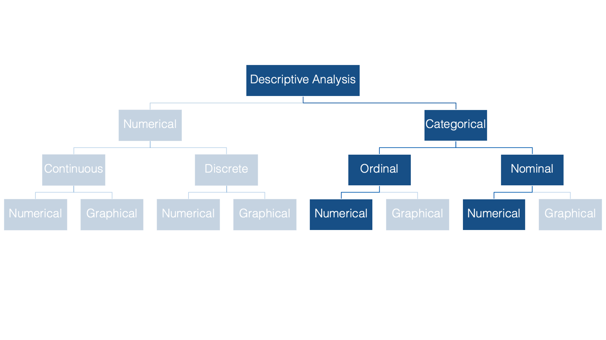
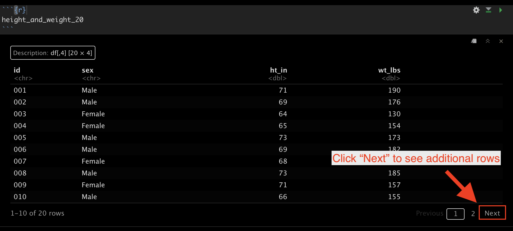

19 Numerical Descriptions of Categorical Variables
We’ll begin our discussion of descriptive statistics in the categorical half of our flow chart. Specifically, we’ll start by numerically describing categorical variables. As a reminder, categorical variables are variables whose values fit into categories.
Some examples of categorical variables commonly seen in public health data are: sex, race or ethnicity, and level of educational attainment.

Notice that there is no inherent numeric value to any of these categories. Having said that, we can, and often will, assign a numeric value to each category using R.
The two most common numerical descriptions of categorical variables are probably the frequency count (you will often hear this referred to as simply the frequency, the count, or the n) and the proportion or percentage (the percentage is just the proportion multiplied by 100).

The count is simply the number of observations, in this case people, which fall into each possible category.
The proportion is just the count divided by the total number of observations. In this example, 2 people out of 5 people (.40 or 40%) are in the Asian race category.
The remainder of this chapter is devoted to learning how to calculate frequency counts and percentages using R.
19.1 Factors
We first learned about factors in the Let’s Get Programming chapter. Before moving on to calculating frequency counts and percentages, we will discuss factors in slightly greater depth here. As a reminder, factors can be useful for representing categorical data in R. To demonstrate, let’s simulate a simple little data frame.
# Load dplyr for tibble()
library(dplyr)demo <- tibble(
id = c("001", "002", "003", "004"),
age = c(30, 67, 52, 56),
edu = c(3, 1, 4, 2)
)👆 Here’s what we did above:
We created a data frame that is meant to simulate some demographic information about 4 hypothetical study participants.
The first variable (
id) is the participant’s study id.The second variable (
age) is the participant’s age at enrollment in the study.The third variable (
edu) is the highest level of formal education the participant completed. Where:1 = Less than high school
2 = High school graduate
3 = Some college
4 = College graduate
Each participant in our data frame has a value for edu – 1, 2, 3, or 4. The value they have for that variable corresponds to the highest level of formal education they have completed, which is split up into categories that we defined. We can see which category each person is in by viewing the data.
demo# A tibble: 4 × 3
id age edu
<chr> <dbl> <dbl>
1 001 30 3
2 002 67 1
3 003 52 4
4 004 56 2We can see that person 001 is in category 3, person 002 is in category 1, and so on. This compact representation of the categories is convenient for data entry and data manipulation, but it also has an obvious limitation – what do these numbers mean? We defined what these values mean for you above, but if you didn’t have that information, or some kind of prior knowledge about the process that was used to gather this data, then you would likely have no idea what these numbers mean.
Now, we could have solved that problem by making education a character vector from the beginning. For example:
demo <- tibble(
id = c("001", "002", "003", "004"),
age = c(30, 67, 52, 56),
edu = c(3, 1, 4, 2),
edu_char = c(
"Some college", "Less than high school", "College graduate",
"High school graduate"
)
)
demo# A tibble: 4 × 4
id age edu edu_char
<chr> <dbl> <dbl> <chr>
1 001 30 3 Some college
2 002 67 1 Less than high school
3 003 52 4 College graduate
4 004 56 2 High school graduate But, this strategy also has a few limitations.
👎 First, entering data this way requires more typing. Not such a big deal in this case because we only have 4 participants. But, imagine typing out the categories as character strings 10, 20, or 100 times. 😫
👎 Second, R summarizes character vectors alphabetically by default, which may not be the ideal way to order some categorical variables.
👎 Third, creating categorical variables in our data frame as character vectors limits us to inputting only observed values for that variable. However, there are cases when other categories are possible and just didn’t apply to anyone in our data. That information may be useful to know.
At this point, we’re going to show you how to coerce a variable to a factor in your data frame. Then, we will return to showing you how using factors can overcome some of the limitations outlined above.
19.1.1 Coerce a numeric variable
The code below shows one method for coercing a numeric vector into a factor.
# Load dplyr for pipes and mutate()
library(dplyr)demo <- demo |>
mutate(
edu_f = factor(
x = edu,
levels = 1:4,
labels = c(
"Less than high school", "High school graduate", "Some college",
"College graduate"
)
)
)
demo# A tibble: 4 × 5
id age edu edu_char edu_f
<chr> <dbl> <dbl> <chr> <fct>
1 001 30 3 Some college Some college
2 002 67 1 Less than high school Less than high school
3 003 52 4 College graduate College graduate
4 004 56 2 High school graduate High school graduate 👆Here’s what we did above:
We used
dplyr’smutate()function to create a new variable (edu_f) in the data frame calleddemo. The purpose of themutate()function is to add new variables to data frames. We will discussmutate()in greater detail later in the book.You can type
?mutateinto your R console to view the help documentation for this function and follow along with the explanation below.We assigned this new data frame the name
demousing the assignment operator (<-).Because we assigned it the name
demo, our previous data frame nameddemo(i.e., the one that didn’t includeedu_f) no longer exists in our global environment. If we had wanted to keep that data frame in our global environment, we would have needed to assign our new data frame a different name (e.g.,demo_w_factor).
The first argument to the
mutate()function is the.dataargument. The value passed to the.dataargument should be a data frame that is currently in our global environment. We passed the data framedemoto the.dataargument using the pipe operator (|>), which is whydemoisn’t written insidemutate’s parentheses.The second argument to the
mutate()function is the...argument. The value passed to the...argument should be a name value pair. That means, a variable name, followed by an equal sign, followed by the values to be assigned to that variable name (name = value).The name we passed to the
...argument wasedu_f. This value tells R what to name the new variable we are creating.If we had used the name
eduinstead, then the previous values in theeduvariable would have been replaced with the new values. That is sometimes what you want to happen. However, when it comes to creating factors, we typically keep the numeric version of the variable in our data frame (e.g.,edu) and add a new factor variable. We just often find that it can be useful to have both versions of the variable hanging around during the analysis process.We also use the
_fnaming convention in our code. That means that when we create a new factor variable we name it the same thing the original variable was named with the addition of_f(for factor) at the end.
In this case, the value that will be assigned to the name
edu_fwill be the values returned by thefactor()function. This is an example of nesting functions.
We used the
factor()function to create a factor vector.You can type
?factorinto your R console to view the help documentation for this function and follow along with the explanation below.The first argument to the
factor()function is thexargument. The value passed to thexargument should be a vector of data. We passed theeduvector to thexargument.The second argument to the
factor()function is thelevelsargument. This argument tells R the unique values that the new factor variable can take. We used the shorthand1:4to tell R thatedu_fcan take the unique values 1, 2, 3, or 4.The third argument to the
factor()function is thelabelsargument. The value passed to thelabelsargument should be a character vector of labels (i.e., descriptive text) for each value in thelevelsargument. The order of the labels in the character vector we pass to thelabelsargument should match the order of the values passed to thelevelsargument. For example, the ordering oflevelsandlabelsabove tells R that1should be labeled with “Less than high school”,2should be labeled with “High school graduate”, etc.
When we printed the data frame above, the values in edu_f looked the same as the character strings displayed in edu_char. Notice, however, that the variable type displayed below edu_char in the data frame above is <chr> for character. Alternatively, the variable type displayed below edu_f is <fctr>. Although, labels are used to make factors look like character vectors, they are still integer vectors under the hood. For example:
as.numeric(demo$edu_char)Warning: NAs introduced by coercion[1] NA NA NA NAas.numeric(demo$edu_f)[1] 3 1 4 2There are two main reasons that you may want to use factors instead of character vectors at times:
👍 First, R summarizes character vectors alphabetically by default, which may not be the ideal way to order some categorical variables. However, we can explicitly set the order of factor levels. This will be useful to us later when we analyze categorical variables. Here is a glimpse of things to come:
table(demo$edu_char)
College graduate High school graduate Less than high school
1 1 1
Some college
1 table(demo$edu_f)
Less than high school High school graduate Some college
1 1 1
College graduate
1 👆Here’s what we did above:
You can type
?base::tableinto your R console to view the help documentation for this function and follow along with the explanation below.We used the
table()function to get a count of the number of times each unique value ofedu_charappears in our data frame. In this case, each value appears one time. Notice that the results are returned to us in alphabetical order.Next, we used the
table()function to get a count of the number of times each unique value ofedu_fappears in our data frame. Again, each value appears one time. Notice, however, that this time the results are returned to us in the order that we passed to thelevelsargument of thefactor()function above.
👍 Second, creating categorical variables in our data frame as character vectors limits us to inputting only observed values for that variable. However, there are cases when other categories are possible and just didn’t apply to anyone in our data. That information may be useful to know. Factors allow us to tell R that other values are possible, even when they are unobserved in our data. For example, let’s add a fifth possible category to our education variable – graduate school.
demo <- demo |>
mutate(
edu_5cat_f = factor(
x = edu,
levels = 1:5,
labels = c(
"Less than high school", "High school graduate", "Some college",
"College graduate", "Graduate school"
)
)
)
demo# A tibble: 4 × 6
id age edu edu_char edu_f edu_5cat_f
<chr> <dbl> <dbl> <chr> <fct> <fct>
1 001 30 3 Some college Some college Some college
2 002 67 1 Less than high school Less than high school Less than high …
3 003 52 4 College graduate College graduate College graduate
4 004 56 2 High school graduate High school graduate High school gra…Now, let’s use the table() function once again to count the number of times each unique level of edu_char appears in the data frame and the number of times each unique level of edu_5cat_f appears in the data frame:
table(demo$edu_char)
College graduate High school graduate Less than high school
1 1 1
Some college
1 table(demo$edu_5cat_f)
Less than high school High school graduate Some college
1 1 1
College graduate Graduate school
1 0 Notice that R now tells us that the value Graduate school was possible but was observed zero times in the data.
19.1.2 Coerce a character variable
It is also possible to coerce character vectors to factors. For example, we can coerce edu_char to a factor like so:
demo <- demo |>
mutate(
edu_f_from_char = factor(
x = edu_char,
levels = c(
"Less than high school", "High school graduate", "Some college",
"College graduate", "Graduate school"
)
)
)
demo# A tibble: 4 × 7
id age edu edu_char edu_f edu_5cat_f edu_f_from_char
<chr> <dbl> <dbl> <chr> <fct> <fct> <fct>
1 001 30 3 Some college Some colle… Some coll… Some college
2 002 67 1 Less than high school Less than … Less than… Less than high…
3 003 52 4 College graduate College gr… College g… College gradua…
4 004 56 2 High school graduate High schoo… High scho… High school gr…table(demo$edu_f_from_char)
Less than high school High school graduate Some college
1 1 1
College graduate Graduate school
1 0 👆Here’s what we did above:
We coerced a character vector (
edu_char) to a factor using thefactor()function.Because the levels are character strings, there was no need to pass any values to the
labelsargument this time. Keep in mind, though, that the order of the values passed to thelevelsargument matters. It will be the order that the factor levels will be displayed in your analyses.
Now that we know how to use factors, let’s return to our discussion of describing categorical variables.
19.2 Height and Weight Data
Below, we’re going to learn to do descriptive analysis in R by experimenting with some simulated data that contains several people’s sex, height, and weight. You can follow along with this lesson by copying and pasting the code chunks below in your R session.
# Load the dplyr package. We will need several of dplyr's functions in the
# code below.
library(dplyr)# Simulate some data
height_and_weight_20 <- tibble(
id = c(
"001", "002", "003", "004", "005", "006", "007", "008", "009", "010", "011",
"012", "013", "014", "015", "016", "017", "018", "019", "020"
),
sex = c(1, 1, 2, 2, 1, 1, 2, 1, 2, 1, 1, 2, 2, 2, 1, 2, 2, 2, 2, 2),
sex_f = factor(sex, 1:2, c("Male", "Female")),
ht_in = c(
71, 69, 64, 65, 73, 69, 68, 73, 71, 66, 71, 69, 66, 68, 75, 69, 66, 65, 65,
65
),
wt_lbs = c(
190, 176, 130, 154, 173, 182, 140, 185, 157, 155, 213, 151, 147, 196, 212,
190, 194, 176, 176, 102
)
)19.2.1 View the data
Let’s start our analysis by taking a quick look at our data…
height_and_weight_20# A tibble: 20 × 5
id sex sex_f ht_in wt_lbs
<chr> <dbl> <fct> <dbl> <dbl>
1 001 1 Male 71 190
2 002 1 Male 69 176
3 003 2 Female 64 130
4 004 2 Female 65 154
5 005 1 Male 73 173
6 006 1 Male 69 182
7 007 2 Female 68 140
8 008 1 Male 73 185
9 009 2 Female 71 157
10 010 1 Male 66 155
11 011 1 Male 71 213
12 012 2 Female 69 151
13 013 2 Female 66 147
14 014 2 Female 68 196
15 015 1 Male 75 212
16 016 2 Female 69 190
17 017 2 Female 66 194
18 018 2 Female 65 176
19 019 2 Female 65 176
20 020 2 Female 65 102👆Here’s what we did above:
Simulated some data that we can use to practice categorical data analysis.
We viewed the data and found that it has 5 variables (columns) and 20 observations (rows).
Also notice that you can use the “Next” button at the bottom right corner of the printed data frame to view rows 11 through 20 if you are viewing this data in RStudio.

19.3 Calculating frequencies
Now that we’re able to easily view our data, let’s return to the original purpose of this demonstration – calculating frequencies and proportions. At this point, we suspect that few of you would have any trouble saying that the frequency of females in this data is 12 and the frequency of males in this data is 8. It’s pretty easy to just count the number of females and males in this small data set with only 20 rows. Further, if we asked you what proportion of this sample is female, most of you would still be able to easily say 12/20 = 0.6, or 60%. But, what if we had 100 observations or 1,000,000 observations? You’d get sick of counting pretty quickly. Fortunately, you don’t have to! Let R do it for you! As is almost always the case with R, there are multiple ways we can calculate the statistics that we’re interested in.
19.3.1 The base R table function
As we already saw above, we can use the base R table() function like this:
table(height_and_weight_20$sex)
1 2
8 12 Additionally, we can use the CrossTable() function from the gmodels package, which gives us a little more information by default.
19.3.2 The gmodels CrossTable function
# Like all packages, you will have to install gmodels (install.packages("gmodels")) before you can use the CrossTable() function.
gmodels::CrossTable(height_and_weight_20$sex)
Cell Contents
|-------------------------|
| N |
| N / Table Total |
|-------------------------|
Total Observations in Table: 20
| 1 | 2 |
|-----------|-----------|
| 8 | 12 |
| 0.400 | 0.600 |
|-----------|-----------|
19.3.3 The tidyverse way
The final way we’re going to discuss here is the tidyverse way, which is our preference. We will have to write a little additional code, but the end result will be more flexible, more readable, and will return our statistics to us in a data frame that we can save and use for further analysis. Let’s walk through this step by step…
Note
You should already be familiar with the pipe operator (|>), but if it doesn’t look familiar to you, you can learn more about it in Using pipes. Don’t forget, if you are using RStudio, you can use the keyboard shortcut shift + command + m (Mac) or shift + control + m (Windows) to insert the pipe operator.
First, we don’t want to view the individual values in our data frame. Instead, we want to condense those values into summary statistics. This is a job for the summarise() function.
height_and_weight_20 |>
summarise()# A tibble: 1 × 0As you can see, summarise() doesn’t do anything interesting on its own. We need to tell it what kind of summary information we want. We can use the n() function to count rows. By default, it will count all the rows in the data frame. For example:
height_and_weight_20 |>
summarise(n())# A tibble: 1 × 1
`n()`
<int>
1 20👆Here’s what we did above:
We passed our entire data frame to the
summarise()function and asked it to count the number of rows in the data frame.The result we get is a new data frame with 1 column (named
n()) and one row with the value 20 (the number of rows in the original data frame).
This is a great start. However, we really want to count the number of rows that have the value “Female” for sex_f, and then separately count the number of rows that have the value “Male” for sex_f. Said another way, we want to break our data frame up into smaller data frames – one for each value of sex_f – and then count the rows. This is exactly what dplyr’s group_by() function does.
height_and_weight_20 |>
group_by(sex_f) |>
summarise(n())# A tibble: 2 × 2
sex_f `n()`
<fct> <int>
1 Male 8
2 Female 12And, that’s what we want.
Note
dplyr’s group_by() function operationalizes the Split - Apply - Combine strategy for data analysis. That sounds sort of fancy, but all it really means is that we split our data frame up into smaller data frames, apply our calculation separately to each smaller data frame, and then combine those individual results back together as a single result. So, in the example above, the height_and_weight_20 data frame was split into two separate little data frames (i.e., one for females and one for males), then the summarise() and n() functions counted the number of rows in each of the two smaller data frames (i.e., 12 and 8 respectively), and finally combined those individual results into a single data frame, which was printed to the screen for us to view.
However, it will be awkward to work with a variable named n() (i.e., with parentheses) in the future. Let’s go ahead and assign it a different name. We can assign it any valid name we want. Some names that might make sense are n, frequency, or count. We’re going to go ahead and just name it n without the parentheses.
height_and_weight_20 |>
group_by(sex_f) |>
summarise(n = n())# A tibble: 2 × 2
sex_f n
<fct> <int>
1 Male 8
2 Female 12👆Here’s what we did above:
- We added
n =to our summarise function (summarise(n = n())) so that our count column in the resulting data frame would be namedninstead ofn().
Finally, estimating categorical frequencies like this is such a common operation that dplyr has a shortcut for it – count(). We can use the count() function to get the same result that we got above.
height_and_weight_20 |>
count(sex_f)# A tibble: 2 × 2
sex_f n
<fct> <int>
1 Male 8
2 Female 1219.4 Calculating percentages
In addition to frequencies, we will often be interested in calculating percentages for categorical variables. As always, there are many ways to accomplish this task in R. From here on out, we’re going to primarily use tidyverse functions.
In this case, the proportion of people in our data who are female can be calculated as the number who are female (12) divided by the total number of people in the data (20). Because we already know that there are 20 people in the data, we could calculate proportions like this:
height_and_weight_20 |>
count(sex_f) |>
mutate(prop = n / 20)# A tibble: 2 × 3
sex_f n prop
<fct> <int> <dbl>
1 Male 8 0.4
2 Female 12 0.6👆Here’s what we did above:
Because the
count()function returns a data frame just like any other data frame, we can manipulate it in the same ways we can manipulate any other data frame.So, we used
dplyr’smutate()function to create a new variable in the data frame namedprop. Again, we could have given it any valid name.Then we set the value of
propto be equal to the value ofndivided by 20.
This works, but it would be better to have R calculate the total number of observations for the denominator (20) than for us to manually type it in. In this case, we can do that with the sum() function.
height_and_weight_20 |>
count(sex_f) |>
mutate(prop = n / sum(n))# A tibble: 2 × 3
sex_f n prop
<fct> <int> <dbl>
1 Male 8 0.4
2 Female 12 0.6👆Here’s what we did above:
- Instead of manually typing in the total count for our denominator (20), we had R calculate it for us using the
sum()function. Thesum()function added together all the values of the variablen(i.e., 12 + 8 = 20).
Finally, we just need to multiply our proportion by 100 to convert it to a percentage.
height_and_weight_20 |>
count(sex_f) |>
mutate(percent = n / sum(n) * 100)# A tibble: 2 × 3
sex_f n percent
<fct> <int> <dbl>
1 Male 8 40
2 Female 12 60👆Here’s what we did above:
Changed the name of the variable we are creating from
proptopercent. But, we could have given it any valid name.Multiplied the proportion by 100 to convert it to a percentage.
19.5 Missing data
In the real world, you will frequently encounter data that has missing values. Let’s quickly take a look at an example by adding some missing values to our data frame.
height_and_weight_20 <- height_and_weight_20 |>
mutate(sex_f = replace(sex, c(2, 9), NA)) |>
print()# A tibble: 20 × 5
id sex sex_f ht_in wt_lbs
<chr> <dbl> <dbl> <dbl> <dbl>
1 001 1 1 71 190
2 002 1 NA 69 176
3 003 2 2 64 130
4 004 2 2 65 154
5 005 1 1 73 173
6 006 1 1 69 182
7 007 2 2 68 140
8 008 1 1 73 185
9 009 2 NA 71 157
10 010 1 1 66 155
11 011 1 1 71 213
12 012 2 2 69 151
13 013 2 2 66 147
14 014 2 2 68 196
15 015 1 1 75 212
16 016 2 2 69 190
17 017 2 2 66 194
18 018 2 2 65 176
19 019 2 2 65 176
20 020 2 2 65 102👆Here’s what we did above:
- Replaced the 2nd and 9th value of
sex_fwithNA(missing) using thereplace()function.
Now let’s see how our code from above handles this
height_and_weight_20 |>
count(sex_f) |>
mutate(percent = n / sum(n) * 100)# A tibble: 3 × 3
sex_f n percent
<dbl> <int> <dbl>
1 1 7 35
2 2 11 55
3 NA 2 10As you can see, we are now treating missing as if it were a category of sex_f. Sometimes this will be the result you want. However, often you will want the n and percent of non-missing values for your categorical variable. This is sometimes referred to as a complete case analysis. There’s a couple of different ways we can handle this. We will simply filter out rows with a missing value for sex_f with dplyr’s filter() function.
height_and_weight_20 |>
filter(!is.na(sex_f)) |>
count(sex_f) |>
mutate(percent = n / sum(n) * 100)# A tibble: 2 × 3
sex_f n percent
<dbl> <int> <dbl>
1 1 7 38.9
2 2 11 61.1👆Here’s what we did above:
We used
filter()to keep only the rows that have a non-missing value for sex_f.In the R language, we use the
is.na()function to tell the R interpreter to identify NA (missing) values in a vector. We cannot use something likesex_f == NAto identify NA values, which is sometimes confusing for people who are coming to R from other statistical languages.In the R language,
!is the NOT operator. It sort of means “do the opposite.”So,
filter()tells R which rows of a data frame to keep, andis.na(sex_f)tells R to find rows with an NA value for the variablesex_f. Together,filter(is.na(sex_f))would tell R to keep rows with an NA value for the variablesex_f. Adding the NOT operator!tells R to do the opposite – keep rows that do NOT have an NA value for the variablesex_f.
We used our code from above to calculate the n and percent of non-missing values of sex_f.
19.6 Formatting results
Notice that now our percentages are being displayed with 5 digits to the right of the decimal. If we wanted to present our findings somewhere (e.g., a journal article or a report for our employer) we would almost never want to display this many digits. Let’s get R to round these numbers for us.
height_and_weight_20 |>
filter(!is.na(sex_f)) |>
count(sex_f) |>
mutate(percent = (n / sum(n) * 100) |> round(2))# A tibble: 2 × 3
sex_f n percent
<dbl> <int> <dbl>
1 1 7 38.9
2 2 11 61.1👆Here’s what we did above:
We passed the calculated percentage values
(n / sum(n) * 100)to theround()function to round our percentages to 2 decimal places.Notice that we had to wrap
n / sum(n) * 100in parentheses in order to pass it to theround()function with a pipe.We could have alternatively written our R code this way:
mutate(percent = round(n / sum(n) * 100, 2)).
19.7 Using freqtables
In the sections above, we learned how to use dplyr functions to calculate the frequency and percentage of observations that take on each value of a categorical variable. However, there can be a fair amount of code writing involved when using those methods. The more we have to repeatedly type code, the more tedious and error-prone it becomes. This is an idea we will return to many times in this book. Luckily, the R programming language allows us to write our own functions, which solves both of those problems.
Later in this book, we will show you how to write your own functions. For the time being, We’re going to suggest that you install and use a package we created called freqtables. The freqtables package is basically an enhanced version of the code we wrote in the sections above. We designed it to help us quickly make tables of descriptive statistics (i.e., counts, percentages, confidence intervals) for categorical variables, and it’s specifically designed to work in a dplyr pipeline.
Like all packages, you need to first install it…
# You may be asked if you want to update other packages on your computer that
# freqtables uses. Go ahead and do so.
install.packages("freqtables")And then load it…
# After installing freqtables on your computer, you can load it just like you
# would any other package.
library(freqtables)Now, let’s use the freq_table() function from freqtables package to rerun our analysis from above.
height_and_weight_20 |>
filter(!is.na(sex_f)) |>
freq_table(sex_f)# A tibble: 2 × 9
var cat n n_total percent se t_crit lcl ucl
<chr> <chr> <int> <int> <dbl> <dbl> <dbl> <dbl> <dbl>
1 sex_f 1 7 18 38.9 11.8 2.11 18.2 64.5
2 sex_f 2 11 18 61.1 11.8 2.11 35.5 81.8👆Here’s what we did above:
We used
filter()to keep only the rows that have a non-missing value for sex and passed the data frame on to thefreq_table()function using a pipe.We told the
freq_table()function to create a univariate frequency table for the variablesex_f. A “univariate frequency table” just means a table (data frame) of useful statistics about a single categorical variable.The univariate frequency table above includes:
var: The name of the categorical variable (column) we are analyzing.cat: Each of the different categories the variablevarcontains – in this case “Male” and “Female”.n: The number of rows wherevarequals the value incat. In this case, there are 7 rows where the value ofsex_fis Male, and 11 rows where the value ofsex_fis Female.n_total: The sum of all thenvalues. This is also to total number of rows in the data frame currently being analyzed.percent: The percent of rows wherevarequals the value incat.se: The standard error of the percent. This value is not terribly useful on its own; however, it’s necessary for calculating the 95% confidence intervals.t_crit: The critical value from the t distribution. This value is not terribly useful on its own; however, it’s necessary for calculating the 95% confidence intervals.lcl: The lower (95%, by default) confidence limit for the percentagepercent.ucl: The upper (95%, by default) confidence limit for the percentagepercent.
We will continue using the freqtables package at various points throughout the book. We will also show you some other cool things we can do with freqtables. For now, all you need to know how to do is use the freq_table() function to calculate frequencies and percentages for single categorical variables.
🏆 Congratulations! You now know how to use R to do some basic descriptive analysis of individual categorical variables.